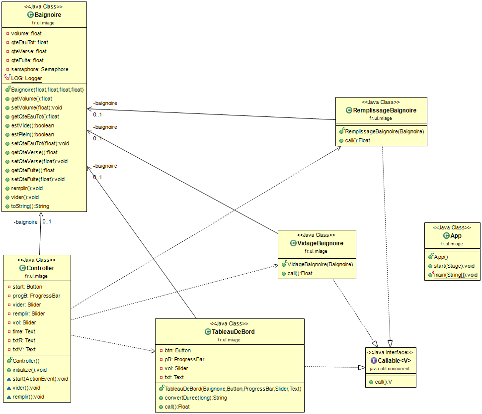

La documentation technique:
Les outils :
Pour ce projet j'ai travaillé avec les outils suivants :
- Scene Builder :outil permettant de réaliser des interfaces JavaFX (version 8).
- Eclipse : IDE pour la programmation Java (jdk 1.8_0241).
- Maven & les plugins nécessaires pour générer les fichiers archives et le fichier binaire (inclus avec cette documentation).
- ObjeAid UML Diagramm : est un outil permettant de créer des diagrammes à partir d'Eclipse.
Le diagramme de classe :

Explications
Dans le diagramme, il y a les relations suivantes :
-
Les classes tableauDeBord, VidageBaignoire et RemplissageBaignoire implémentent l'interface Callable,
-
Controller et Baignoire : relation associative entre les deux classes (Instance de Baignoire dans la classe Controller),
-
VidageBaignoire et Baignoire : relation associative entre les deux classes (utilisée dans le constructeur),
-
RemplissageBaignoire et Baignoire : relation associative entre les deux classes (utilisée dans le constructeur),
-
RemplissageBaignoire et Baignoire : relation associative entre les deux classes (utilisée l'objet de la bagnoire afin de simuler l'état de la baignoire),
-
Controller et Log : relation de type use, car la classe Controller ce que contient la classe Log (Instance de Log dans la classe Controller),
-
Relations de dépendances entre Controller et les classes TableauDeBord, VidageBaignoire, RemplissageBaignoire.
Les classes :
Pour ce TP, j'ai travaillé avec l'interface Callable permettant de faire du multithread.
App.java
Cette classe est la classe principale permettant de lancer l'interface (Baignoire.fxml). Il y a deux méthodes :
-
start() : permettant de charger le fichier .fxml, de modifier le titre de la fenêtre (setTitle()), de spécifier le scène qui va être utilisé (setScene()), d'afficher la scène (commande show()). La taille de la fenêtre n'est pas modifiable (avec setResizable()), ceci évitant de modifier la taille de la fenêtre et l'affichage a été réalisé de la manière la plus simple possible afin de pouvoir l'afficher sur tous les types d'écran (15 pouces, 17 pouces, 19 pouces et inférieur).
-
main() : qui permet de charger la fenêtre avec la commande launch(args) .
Baignoire.java
La classe Baignoire contient 6 paramètres : * volume (float), * qteEauTot (float), * qteVerse (float), * qteFuite (float), * semaphore (classe Semaphore), * un élément log (classe Logger) pour les messages d'erreur.
Différence entre volume et qteEauTot, le volume est définie avec le premier slider, qui définit le volume à atteindre afin de remplir la baignoire, en d'autre termes, il s'agit du volume d'eau de la baignoire (ex : 250L). Tandis que la qteEauTot, correspond à la quantité d'eau se trouvant actuellement dans la baignoire qui varie en fonction de la quantité d'eau versée (qteVerse) et la quantité d'eau qui fuit (qteFuite).
On y a crée le constructeur, les getters et setters ainsi que la méthode toString();
-
estPlein() : retourne true si la baignoire est pleine, on vérifie si la quantité d'eau contenue dans la baignoire est égale au volume de la baignorie.
-
remplir() : est une fonction qui permet de remplir la baignoire en vérifiant si la quantité d'eau actuelle de la baignoire additionnée à la quantité versée est inférieure ou égale au volume (le volume étant la quantité à atteindre pour que la baignoire soit remplie) alors on incrémente la quantité d'eau.
-
vider() : est une fonction qui permet de vider la baignoire en vérifiant si la quantité d'eau actuelle de la baignoire additionnée à la quantité fuitée est inférieure ou égale à 0 (on ne peut pas avoir un volume d'eau négatif) alors on soustrait la quantité d'eau.
Informations complémentaires :
- acquire() : demande une ou plusieurs autorisations. Cette méthode est dites bloquante, c'est à dire, qu'elle ne rend la main que lorsque le nombre d'autorisations demandé est disponible, auquel cas, elle renvoie une exception InterruptedException si le thread est interrompu.
release() : est une méthode qui permet de rendre une autorisation.
- Ces deux méthodes sont utilisés dans les setters setVolume(), setQteVerse, setQteFuite, afin de pouvoir modifier le volume de la baignoire et les quantités d'eau versée et de fuite.
Controller.java
-
initialize() : est la fonction qui s'exécute lorsque la fenètre FXML se créée. Lors de l'initialisation, on affiche le contenu des textes time et res avec la méthode setDisable() et on modifie le contenu avec la méthode setText().
-
start(ActionEvent e) : est la fonction qui s'exécute lorsque l'on clique sur le bouton "Démarrer". On crée une nouvelle instance de la classe Baignoire nommée baignoire. À l'aide de cette objet Baignoire, on va créer 3 threads qui vont prendre cet objet en paramètre (les paramètres de la baignoire sont récupérées via les sliders) et à l'aide de l'interface CompletionService, on va exécuter ces threads en différer et récupérer leurs résultats.
Informations complémentaires :
-
Executor : cette interface décrit les fonctionnalités permettant l'éxécution différée de tâches implémentées sous Runnable.
- Par exemple :
Executor executor = Executors.newFixedThreadPool(3);
-
CompletionService
: permet la gestion de la récupération des résultats de plusieurs tâches (threads) exécutées de manière asynchrone. - Par exemple :
CompletionService
pool = new ExecutorCompletionService<>(executor); -
submit() avec l'interface (Callable
task) : ajouter la tâche dans la queue pour éxécution. La méthode renvoie un future qui permet d'obtenir les informations sur l'éxécution de la tâche. - Par exemple :
pool.submit(new RemplissageBaignoire(this.baignoire));
-
remplir() (FXML) : est la fonction qui permet de modifier la quantité d'eau fuitée à l'aide du slider dédiée dans la baignoire, si la baignoire n'est pas null et qu'elle n'est pas déjà pleine.La quantité est affichée dans un texte à l'aide de la méthode setText().
-
vider() (FXML) : est la fonction qui permet de modifier la quantité d'eau versée à l'aide du slider dédiée dans la baignoire, si la baignoire n'est pas null et qu'elle n'est pas déjà pleine.La quantité est affichée dans un texte à l'aide de la méthode setText().
TableauDeBord.java
La classe TableauDeBord
-
call() : est une méthode appelée afin d'éxécuter une tâche asynchrone, elle retourne un résultat, en cas d'échec de la tâche, elle renvoie une exception (throws Exception). Dans la classe TableauDeBord, on calcule dans la méthode call le temps que la baignoire met à se remplir et la barre de progression montre l'évolution du volume de l'eau dans la baignoire.
-
convertDuree() : permet retourner la durée calculée en minutes et secondes.
RemplissageBaignoire.java
La classe possède un constructeur avec en paramètre, un objet de la classe baignoire.
- call () même fonctionnement que expliquer plus haut, elle boucle tant que la baignoire ne s'est pas remplie totalement et remplira la baignoire en fonction de la quantité saisie avec le slider avec la méthode remplir() de la classe Baignoire. On utilise juste avant la méthode sleep() afin que le thread courant "dort" et qu'il n'utilise pas pendant la boucle while, le processeur pour ne rien faire.
VidageBaignoire.java
La classe possède un constructeur avec en paramètre, un objet de la classe baignoire.
- call () même fonctionnement que expliquer plus haut, elle boucle tant que la baignoire ne s'est pas remplie totalement et videra la baignoire en fonction de la quantité saisie avec le slider.
Afin de pouvoir mettre à jour les résultats et de pouvoir les visualiser sur l'interface, on utilise la méthode sleep(). Tant que la baignoire n'est pas pas pleine, on peut vider la baignoire en appelant la méthode vider() de la classe Baignoire. On utilise juste avant la méthode sleep() afin que le thread courant "dort" et qu'il n'utilise pas pendant la boucle while, le processeur pour ne rien faire.
Baignoire.fxml
Contient tous les éléments de la fenêtre (progressBar, Button, Text, Slider), avec leurs id fxml, leurs positions, les noms et les actions (onAction pour le bouton Démarrer).
Le POM XML
Le pom.xml contient le modèle objet pour ce projet. Il contient toutes les informations importantes sur ce projet. Il permet de référencer le groupId, artifactId, version, nom, description, etc. Mais également d'y ajouter des plugins et dépendances pour compiler les ressources du projet permettant d'obtenir le .bat ou encore la possibilité de générer des archives (.zip,.rar) avec un .Jar.
- Dans le POM.XML, l'encondage est définie en UTF-8.